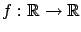
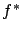
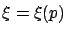
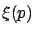
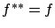
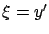
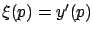
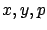
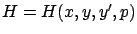

Consider a function

, whose argument we denote by
, of a new variable,
Let  be given. Draw a line through the origin with slope
be given. Draw a line through the origin with slope  .
Take a point
.
Take a point

at which the (directed) vertical distance from the graph of
may not exist, so the domain of is not known a priori. Also, is not necessarily unique unless
The Legendre transformation has some nice properties.
For example,
is a convex function even if  is not convex. The reason is
that
is a pointwise maximum of functions that are
affine in
is not convex. The reason is
that
is a pointwise maximum of functions that are
affine in  , as is clear from (2.35).
Also, for convex functions
the Legendre transformation is involutive: if
, as is clear from (2.35).
Also, for convex functions
the Legendre transformation is involutive: if  is convex, then
is convex, then

.
Now let us return to the Hamiltonian  defined in (2.29).
We claim that it can be obtained by applying the Legendre
transformation to the Lagrangian
defined in (2.29).
We claim that it can be obtained by applying the Legendre
transformation to the Lagrangian  . More precisely, for arbitrary
fixed
. More precisely, for arbitrary
fixed  and
and  let us consider
let us consider  as a function of
as a function of

. The relation (2.37) between
becomes
by the implicit relation (2.38). In other words, the Legendre transform of
.
The above approach has another, more important drawback.
Recall the observation based on (2.31) that  has a stationary point as a function of
has a stationary point as a function of  along an optimal
curve. This property will be crucial
later; combined with the canonical equations (2.30),
it will lead us to the maximum principle.
But it only makes sense when we treat
along an optimal
curve. This property will be crucial
later; combined with the canonical equations (2.30),
it will lead us to the maximum principle.
But it only makes sense when we treat  as an independent
variable in the definition of
as an independent
variable in the definition of  . On the other hand,
Hamilton and other 19th century mathematicians
did not write the Hamiltonian in this way; they followed the convention of
viewing
. On the other hand,
Hamilton and other 19th century mathematicians
did not write the Hamiltonian in this way; they followed the convention of
viewing  as a dependent variable defined implicitly
by (2.38). This is probably why it was not until the late
1950s that the maximum principle was discovered.
as a dependent variable defined implicitly
by (2.38). This is probably why it was not until the late
1950s that the maximum principle was discovered.